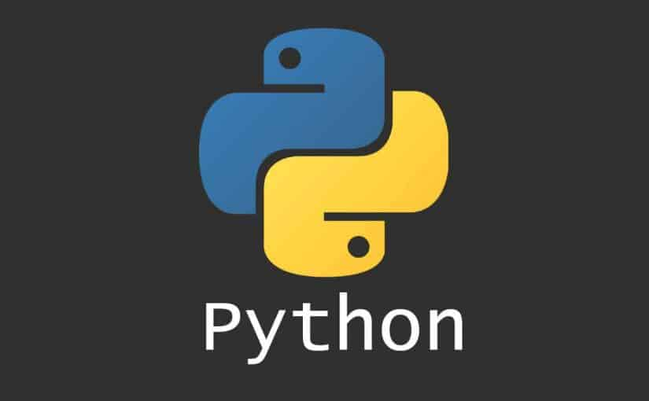

Introduction
Python is an interpreted, high-level, general-purpose programming language. Created by Guido van Rossum and first released in 1991, Python's design philosophy emphasizes code readability with its notable use of significant whitespace. Its language constructs and object-oriented approach aim to help programmers write clear, logical code for small and large-scale projects.
Python is dynamically typed and garbage-collected. It supports multiple programming paradigms, including structured (particularly, procedural), object-oriented, and functional programming. Python is often described as a "batteries included" language due to its comprehensive standard library.
Python was conceived in the late 1980s as a successor to the ABC language. Python 2.0, released in 2000, introduced features like list comprehensions and a garbage collection system capable of collecting reference cycles. Python 3.0, released in 2008, was a major revision of the language that is not completely backward-compatible, and much Python 2 code does not run unmodified on Python 3. The Python 2 language was officially discontinued in 2020 (first planned for 2015), and "Python 2.7.18 is the last Python 2.7 release and therefore the last Python 2 release."
No more security patches or other improvements will be released for it.
With Python 2's end-of-life, only Python 3.5.x and later are supported.
History
Python was conceived in the late 1980s by Guido van Rossum at Centrum Wiskunde & Informatica (CWI) in the Netherlands as a successor to the ABC language (itself inspired by SETL), capable of exception handling and interfacing with the Amoeba operating system. Its implementation began in December 1989.
Van Rossum shouldered sole responsibility for the project, as the lead developer, until 12 July 2018, when he announced his "permanent vacation" from his responsibilities as Python's Benevolent Dictator For Life, a title the Python community bestowed upon him to reflect his long-term commitment as the project's chief decision-maker.
He now shares his leadership as a member of a five-person steering council.
In January 2019, active Python core developers elected Brett Cannon, Nick Coghlan, Barry Warsaw, Carol Willing and Van Rossum to a five-member "Steering Council" to lead the project.
Python 2.0 was released on 16 October 2000 with many major new features, including a cycle-detecting garbage collector and support for Unicode.
Python 3.0 was released on 3 December 2008. It was a major revision of the language that is not completely backward-compatible.
Many of its major features were backported to Python 2.6.x and 2.7.x version series. Releases of Python 3 include the 2to3 utility, which automates (at least partially) the translation of Python 2 code to Python 3.
Python 2.7's end-of-life date was initially set at 2015 then postponed to 2020 out of concern that a large body of existing code could not easily be forward-ported to Python 3.